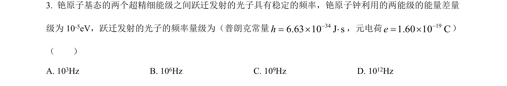
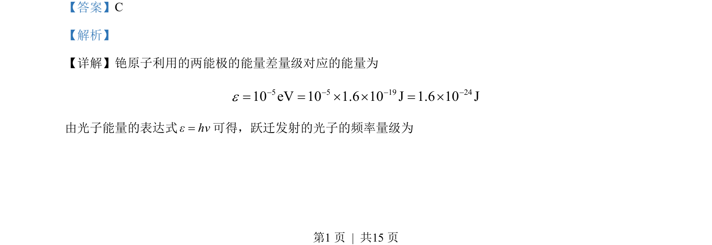

考点：能级跃迁 光子能量 频率

通过铯原子能级能量差计算跃迁光子频率的数量级。

📄 原 PDF 第 1 页：
素材/真题/吉林/2008-2024·（吉林）物理高考真题/2023年高考物理试卷（新课标）（解析卷）.pdf
【答案】C 【解析】 【详解】铯原子利用的两能极的能量差量级对应的能量为 5 5 19 2410 eV 10 1.6 10 J 1.6 10 Je- - - -= = ´ ´ = ´ 由光子能量的表达式εhν=可得，跃迁发射的光子的频率量级为